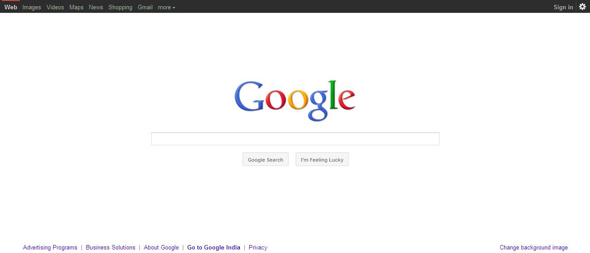

La característica más destacada de Google como buscador es su facilidad de uso. La página principal se limita a presentar el logotipo de la empresa (en ocasiones, adornado con imágenes que permiten recordar algún evento o realizar un homenaje), un cuadro de búsqueda (para introducir los términos a buscar) y algunos enlaces hacia otros servicios de la firma. Para realizar la búsqueda, existen dos grandes opciones: elegir “Buscar con Google” para que el buscador presente todos los resultados que encuentre en Internet o seleccionar “Voy a tener suerte”, que lleva al internauta al primer resultado hallado. Google acepta varios comandos y operadores que permiten perfeccionar las búsquedas. Si el usuario quiere buscar una frase literal, por ejemplo, deberá escribir los términos entre comillas. Los internautas también pueden buscar ciertos contenidos o tipos de archivo específicos mediante Google Noticias, Google Imágenes, Google Video, etc. La integración actual presente en el buscador de Google permite el reconocimiento automático del tipo de contenido solicitado, facilitando la serie de acciones sucesivas a la búsqueda; por ejemplo: tras introducir el nombre de un país o de una ciudad en la casilla de texto del buscador, Google no se limita a devolvernos un conjunto de páginas que contengan información relacionada, sino que cambia el orden de los accesos directos a sus aplicaciones para tener Maps al alcance, por si deseamos investigar directamente sobre el planisferio. Del mismo modo, si buscamos información acerca de “la muerte del presidente Kennedy”, Google se encargará de reordenar los nombres de sus herramientas para que tengamos Noticias, Vídeos e Imágenes más a la mano. Si bien entre los resultados pueden aparecer enlaces a vídeos de diversos proveedores, tras haber realizado una búsqueda tenemos la opción de dirigirnos a Youtube tan solo cliqueando en el enlace Vídeos.